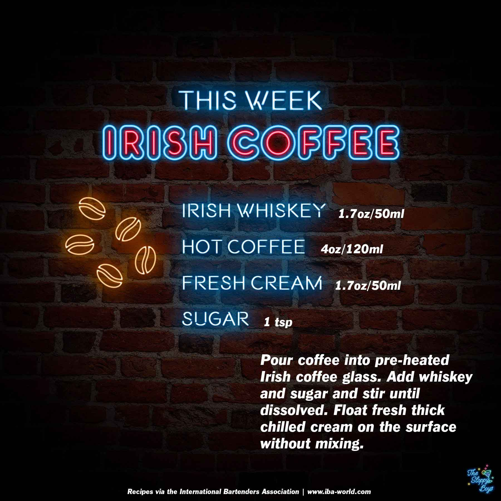

Irish Coffee
Ingredients
- Irish Whiskey (1.7oz/50ml)
- Hot Coffee (4oz/120ml)
- Fresh Cream (1.7oz/50ml)
- Sugar (1 tsp)
Steps
- Pour coffee into pre-heated Irish coffee glass.
- Add whiskey and sugar and stir until dissolved.
- Float fresh thick chilled cream on the surface without mixing.
Notes